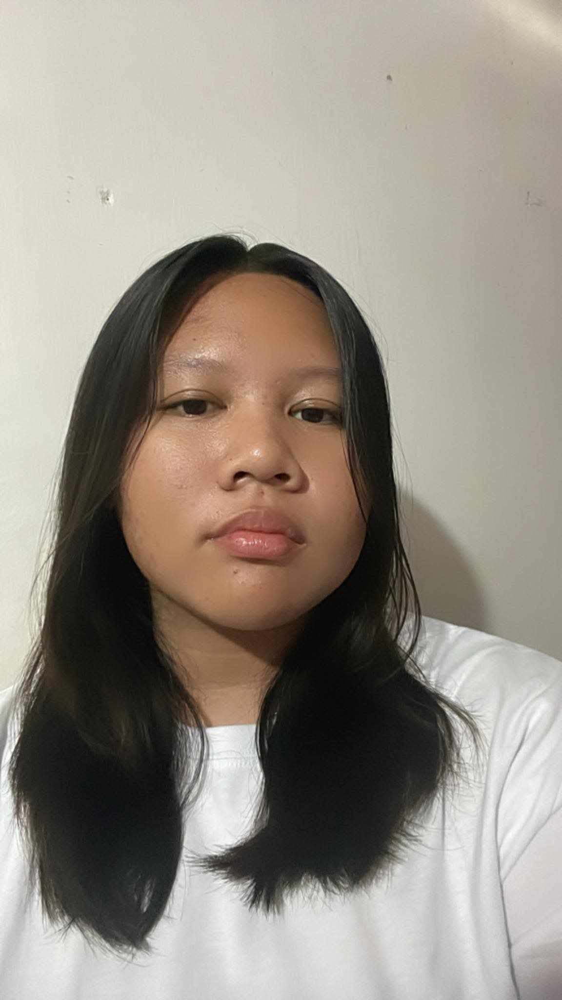

Passionate about learning web development, programming, and creating simple applications.
View Projects
Hello! My name is Bea Bianca Selidio. I am a 3rd Year Bachelor of Science in Information Technology student. I am interested in technology, programming, and web development.
I enjoy learning new technologies and improving my skills by creating simple websites and applications. As an IT student, I am continuously developing my knowledge and gaining experience through school projects and personal practice.
Currently a 3rd Year College Student
Interested in Web Development, Programming, Database Management, and Information Technology.
Completed Senior High School education and developed an interest in computers and technology.
A school-based Lost and Found website designed to help students report lost items and found belongings that have been recovered.
Role: Frontend Developer
A vehicle rental website where users can view available vehicles and submit rental bookings.
Technologies: HTML, CSS, JavaScript, PHP, and MySQL
A simple responsive personal website created using HTML and CSS to introduce myself, showcase my skills, and present my projects.
My goal is to become a skilled IT professional with strong knowledge in programming and web development. I want to continue improving my technical skills and gain real-world experience in the technology industry.
In the future, I hope to work on projects that allow me to use technology to solve problems and create useful applications for people.
📧 Email: bselidio03@gmail.com
📱 Facebook: Aev Selidio